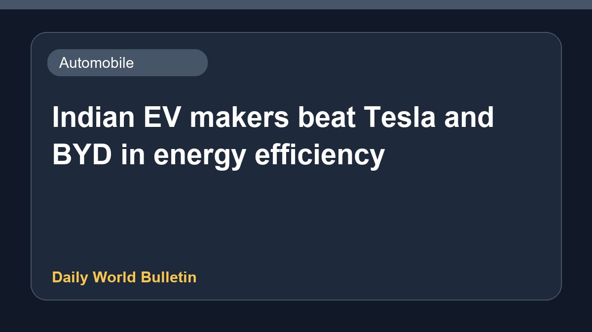

Indian EV makers beat Tesla and BYD in energy efficiency

Recent reports indicate that domestic electric vehicle manufacturers in India have surpassed global giants like Tesla and BYD in terms of energy efficiency. However, despite this positive performance, vehicles produced by Indian makers continue to lag behind competitors regarding charging speed and overall driving range. Industry observers note that while efficiency gains are significant, improvements in battery technology and charging infrastructure are still required to address these existing limitations in the market.
Original source: Automobile News Sources
Indian EV makers outperform Tesla and BYD on energy efficiency, but charging speed and range remain weak - The Statesman ↗
Indian EV makers outperform Tesla and BYD on energy efficiency, but charging speed and range remain weak - The Statesman ↗